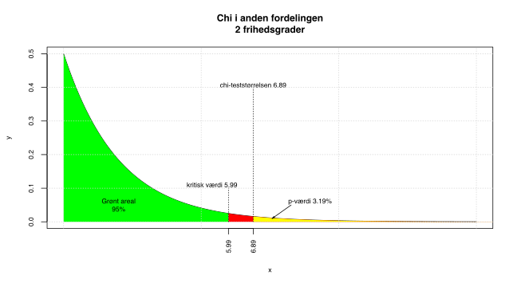
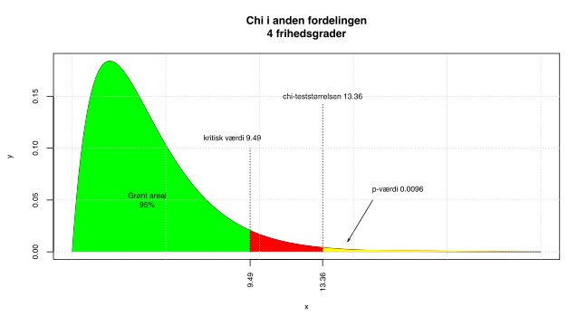
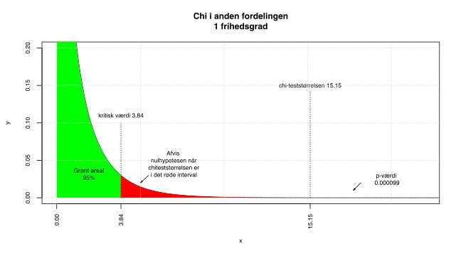
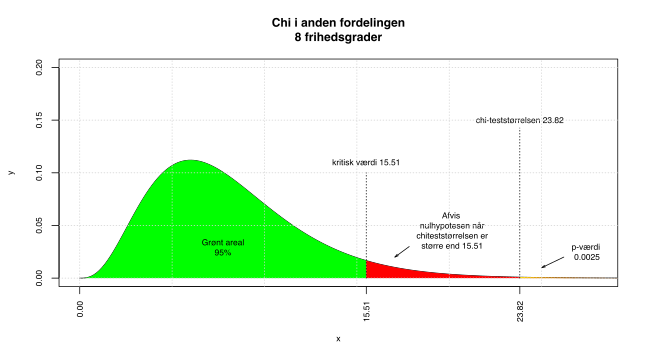

Kapitel 17 Chi i anden tests
17.1 Goodness of fit test
Goodnees of fit testen er en udvidelse af z-testet for en andel.  Med test af andele kan man fx. undersøge om andelen af mænd er 60% og kvinder 40% i en population, vi tester altså fordelingen for en
Med test af andele kan man fx. undersøge om andelen af mænd er 60% og kvinder 40% i en population, vi tester altså fordelingen for en
variabel med 2 mulige udfald. Med et
test kan vi teste
variable med 2 eller flere mulige udfald, man kan fx. undersøge om fordelingen af boligform i en
kan antages at svare til fordelingen på regionsplan: 50% ejer, 20% andel og 30% leje.
Vi tester vha. Chi i anden fordelingen.
vi finder, udtrykker forskellen mellem det vi observerer i
og det vi tester under
.
Antag man simpelt tilfældigt har udtaget en
på 150 boliger, der indeholder 60 ejer- 40 andels- og 50 lejeboliger.
Hvis vi vil undersøge undersøge om fordelingen af boligform i
, kan antages at følge regionsfordelingen som er 50% ejer, 20% andel og 30% leje, opstiller vi følgende hypoteser:
\[H_0:p_{ejer}=0.5\ p_{andel}=0.2\ p_{leje}=0.3\]\[H_1:Fordelingen\ af\ boliger\ følger\ ikke\ samme\ fordeling\ som\ i\ regionen\]
findes som:
\[\chi^2=\sum^k_{j=1}\frac{(O-E)^2}{E}\]
Hvor O er observerede værdier og E er forventede værdier det stammer fra expected på engelsk, k angiver antallet af mulige udfald for den
variabel.
For at beregne
bestemmer vi E, antallet af ejer, leje og andel vi ville forvente i en
på netop 150 boliger, der perfekt repræsenterede regionen.
ejer: \(0.5\cdot150=75\) andel: \(0.2\cdot150=30\) leje: \(0.3\cdot150=45\)
Vi kan nu udregne
som:
\[\chi^2=\frac{(60-75)^2}{75}+\frac{(40-30)^2}{30}+\frac{(50-45)^2}{45}=3+3\frac{1}{3}+\frac{5}{9}=6.8889\]
Vi sammenligner med chi i anden fordelingen med k-1=3-1=2
\(\chi^2_2\), den kritiske værdi bliver 5.9915 hvilket giver
0.0319, illustreret ved den gule hale i figuren nedenfor. Da
6.89 er større end den kritiske værdi 5.99, får vi en
, der er mindre end 5%
. Vi tester her på 5%
, dvs. 100%-5%=95%
. Vi vælger 5%
, når vi ikke har signifikans- eller
, givet i opgaven. Vi forkaster
og konkluderer, fordelingen af boligtyper i
, er ikke identiske med fordelingen i regionen.

I Freestat tastes input i de hvide felter, hvilket resulterer i følgende resultat:

17.2 Forudsætning
En forudsætning for at
testet er tilstrækkeligt præcist, er at de forventede værdier E er tilstrækkeligt store. Der er mange forskellige tolkninger, af størrelsen af E cellerne. Nogle nævner celleværdier skal være større end 3 andre 5, det bør under alle omstændigheder nævnes om forudsætningen synes opfyldt. Hvis de forventede værdier er meget små, kan man sammenlægge kategorier, der vil så være et tradeoff med detaljegraden af analysen. Hvis man sammenlægger bør man gøre dette, så det analytisk giver mening.
I eksemplet med boligtyper, havde vi forventede værdier E på hhv. 75, 30 og 45, her var forudsætningen altså opfyldt.
Spørgsmål datasæt karakterer
Undervisningsministeriet  har et ønske om at karaktererne på landsplan bør normaliseres omkring 7, hvor der er følgende procentvise vægt på hver karakter
har et ønske om at karaktererne på landsplan bør normaliseres omkring 7, hvor der er følgende procentvise vægt på hver karakter
| Karakter | Ønsket fordeling |
|---|---|
| 02 | 10% |
| 4 | 25% |
| 7 | 30% |
| 10 | 25% |
| 12 | 10% |
Der er intet krav til andelen af studerende der består, således drejer fordelingen sig udelukkende om bestået-karakterer.
Hent datasættet statkarakterer for
for statistikstuderende , betragt kun de beståede studerende, kan
antages at følge de generelle retningslinjer?
Svar datasæt karakterer
Vi starter med at se på de beståede 37 studerende, optæl fx. vha. =countif eller =tælhvis i excel for at bestemme antallet af studerende med de respektive karakterer.
| Karakter | Ønsket fordeling | Observeret antal | Observeret Frekvens |
|---|---|---|---|
| 02 | 10% | 9 | 0.2432 |
| 4 | 25% | 6 | 0.1622 |
| 7 | 30% | 5 | 0.1351 |
| 10 | 25% | 12 | 0.3243 |
| 12 | 10% | 5 | 0.1351 |
Vi kan nu bestemme den forventede karakterfordeling hvis karaktererne følger den ønskede fordeling.
| Karakter | Ønsket fordeling | Forventet antal | Chi i anden bidrag |
|---|---|---|---|
| 02 | 10% | 3.7 | 7.5919 |
| 4 | 25% | 9.25 | 1.1419 |
| 7 | 30% | 11.1 | 3.3523 |
| 10 | 25% | 9.25 | 0.8176 |
| 12 | 10% | 3.7 | 0.4568 |
Bemærk forventede værdier er mindre end 5 men større end 3, der kan være problemer med præcisionen. Hvis man ønsker at sammenlægge kategorier giver det ikke mening at lægge 02 og 12 sammen, men gerne 02 og 4 eller 10 og 12. Summen af chi i anden bidrag giver
, dvs:
7.5919+1.1419+3.3523+0.8176=13.3604
Hvilket fører til
0.0096 illustreret ved den gule hale herunder, da
er mindre end 5%
forkaster vi
, og konkluderer at statistikkarakterer på Finansøkonom ikke følger den ønskede fordeling. Vi kan ud fra chi i anden bidragene se hvilke karakterer der giver de største afvigelser. Store bidrag betyder store afvigelser mellem det observede og ønskede. Det største bidrag 7.5919 stammer fra 02 karakteren, her er den observerede karakter 9, mens den forventede værdi er 3.7. Der er altså flere studerende, end forventet der får 02. Bemærk for at vi kan udtale os om
finansøkonomer, fordres at
er repræsentativ for finansøkonomer. Stikprøven er ikke udtaget simpelt tilfældigt, da der er tale om 2 bestemte klasser, det kan derfor diskuteres om
er afspejler
korrekt.

Freestat output bliver:

17.3 Chi i anden test
17.4 Chi i anden test 2
Vi kan analysere
variable med 2 mulige udfald vha. test af 2 andele.
er en udvidelse af test af 2 andele. Med chi i anden testen kan man sammenligne
variable med 2 eller flere mulige udfald.  Vi kan benytte chi i anden testet til at undersøge om der er en sammenhæng mellem 2 inddelingskriterier som fx. køn og bestået/ikke bestået, køn og karakter, aldersgruppe og karakter.
Vi kan benytte chi i anden testet til at undersøge om der er en sammenhæng mellem 2 inddelingskriterier som fx. køn og bestået/ikke bestået, køn og karakter, aldersgruppe og karakter.
Antag et forsikringsselskab har indsamlet data for kunders skadesanmeldelser fordelt på øst og vest for Storebælt. Forsikringsselskabet ønsker at undersøge om der er forskel i andelen af kunder der anmelder skader i Øst- og Vestdanmark. Følgende data er angivet
| Observeret | Ingen skader anmeldt | 1 eller flere skader | Total |
|---|---|---|---|
| Østdanmark | 300 | 300 | 600 |
| Vestdanmark | 250 | 150 | 400 |
| Total | 550 | 450 | 1000 |
Vi kan teste om der er forskel på om der er forskel på andelen af anmeldte skader i Øst- og Vestdanmark vha. chi i anden testet. Vi har følgende hypoteser.
\[H_0: Der\ er\ uafhængighed\ mellem\ række-\ og\ søjlekriterierne\]\[H_1: Der\ er\ afhængighed\ mellem\ række-\ og\ søjlekriterierne\]
Eller mere præcist i dette tilfælde:
\[H_0: Der\ er\ uafhængighed\ mellem\ landsdel\ og\ skadesanmeldelse\]\[H_1: Der\ er\ afhængighed\ mellem\ landsdel\ og\ skadesanmeldelse\]
Hvis
forkastes påvirker landsdelen kunder kommer fra altså andelen af anmeldte skader.
17.4.1 Uafhængighed
Definitionen af
mellem 2 hændelser A og B er at sandsynligheden for fælleshændelsen er lig med produktet af sandsynlighederne for enkelthændelserne som formel skriver vi:
\[P(A\cap B)=P(A)\cdot P(B)\]
Vores hændelse A kan fx. være kunden stammer fra Østdanmark, og hændelse B at kunden har ikke anmeldt skader. Vi får da følgende ligning:
\[P(Østdanmark\cap 0\ skader)=P(Østdanmark)\cdot P(0\ skader)\]
Vi kan omskrive dette til:
\[P(Østdanmark\cap0\ skader)=P(Østdanmark)\cdot P(0\ skader)\Leftrightarrow \frac{300}{1000}=\frac{600}{1000}\cdot \frac{550}{1000} \Leftrightarrow \]\[1000\cdot\frac{300}{1000}=1000\cdot \frac{600\cdot550}{1000\cdot1000} \Leftrightarrow 300= \frac{600\cdot550}{1000}\]
Her er venstresiden i ligningen jo den observerede celleværdi. Hvis der er
under
, vil vi forvente at den observerede værdi, er lig med venstresiden, som vi kalder den forventede værdi. Hvis der er perfekt
mellem landsdel og skadesanmeldelse, ville vi altså i hver celle forvente værdien:
\[\frac{rækkesum\cdot søjlesum}{totalsum}\]
Vi får derfor følgende matrice.
| Forventet | Ingen skader anmeldt | 1 eller flere skader | Total |
|---|---|---|---|
| Østdanmark | \(\frac{rækkesum\cdot søjlesum}{totalsum}=\frac{600\cdot 550}{1000}=330\) | \(\frac{rækkesum\cdot søjlesum}{totalsum}=\frac{600\cdot 450}{1000}=270\) | 600 |
| Vestdanmark | \(\frac{rækkesum\cdot søjlesum}{totalsum}=\frac{400\cdot 550}{1000}=220\) | \(\frac{rækkesum\cdot søjlesum}{totalsum}=\frac{400\cdot 450}{1000}=180\) | 400 |
| Total | 550 | 450 | 1000 |
Vi kan nu beregne chi i anden cellebidragene med samme formel som for
testet:
\[\frac{(O-E)^2}{E}\]
| Chi celle bidrag | Ingen skader anmeldt | 1 eller flere skader | Total |
|---|---|---|---|
| Østdanmark | \(\frac{(300-330)^2}{330}=2.7272727\) | \(\frac{(300-270)^2}{270}=3.3333333\) | |
| Vestdanmark | \(\frac{(250-220)^2}{220}=4.0909091\) | \(\frac{(150-180)^2}{180}=5\) | |
| Total | 15.15 |
bliver 15.15, denne bruger vi til at beregne
for testet af
. Antallet af
for chi i anden fordelingen er antallet af rækkeinddelingskriterier Østdanmark og Vestdanmark minus 1, gange antallet af søjleinddelingskriterier 0 skader og flere end 0 skader minus 1, dvs. \[(r-1)\cdot(s-1)=(2-1)\cdot(2-1)=1\cdot1=1\]
Vi får
0.000099, hvilket er klart mindre end
på 5%, arealet er så lille vi ikke kan se det på figuren nedenfor. Vi forkaster altså
og konstaterer der er
mellem landsdel og anmeldte skader. Landsdelen som kunden stammer fra, påvirker altså antallet af anmeldte skader. Vi kan nu se om der er chi i anden bidrag, der er meget store og dermed bidrager stæ til konklusionen om
. Der er ikke en voldsom forskel i størrelserne på chi i anden bidragene, men når vi ser på observeret mod forventet, ser vi at 150 anmelder skader, det var forventet at 180 personer fra Vestdanmark anmelder skader. Denne tendens er modsat for Østdanmark. Vestdanmark anmelder altså færre skader end Østdanmark.
Ligesom for
testet, skal de forventede værdier have en vis størrelse for at vore konklusioner er præcise. Forudsætningen om forventede værdier større end 5 er opfyldt for alle celler.

Freestat output bliver

17.4.2 Anmeldte skader fordelt på regioner og antal skader
Vi antager nu der foreligger mere specifikke data for undersøgelsen omkring geografisk placering og skadesanmeldelse.Vi har finere inddeling på region og antal skader.
| Observeret | 0 skader | 1 skade | 2 eller flere skader | Total |
|---|---|---|---|---|
| Hovedstaden | 150 | 125 | 50 | 325 |
| Sjælland | 150 | 100 | 25 | 275 |
| Syddanmark | 75 | 30 | 10 | 115 |
| Midtjylland | 75 | 40 | 10 | 125 |
| Nordjylland | 100 | 45 | 15 | 160 |
| Total | 550 | 340 | 110 | 1000 |
Vi kan teste om der er forskel på om der er forskel på andelen af anmeldte skader i Øst- og Vestdanmark vha. chi i anden testet. Vi har følgende hypoteser.
\[H_0: Der\ er\ uafhængighed\ mellem\ region\ og\ antal skader\]\[H_1: Der\ er\ afhængighed\ mellem\ region\ og\ antal skader\]
Hvis
forkastes påvirker regionen kunder kommer fra altså antallet af anmeldte skader.
Vi beregner de forventede værdier efter den sædvanlige formel:
\[\frac{rækkesum\cdot søjlesum}{totalsum}\]
Hvilket giver følgende matrix
| Forventet | 0 skader | 1 skade | 2 eller flere skader | Total |
|---|---|---|---|---|
| Hovedstaden | 178.75 | 110.5 | 35.75 | 325 |
| Sjælland | 151.25 | 93.5 | 30.25 | 275 |
| Syddanmark | 63.25 | 39.1 | 12.65 | 115 |
| Midtjylland | 68.75 | 42.5 | 13.75 | 125 |
| Nordjylland | 88 | 54.4 | 17.6 | 160 |
| Total | 550 | 340 | 110 | 1000 |
Vi kan nu beregne chi i anden cellebidragene med samme formel som for
testet:
\[\frac{(O-E)^2}{E}\]
| Chi celle bidrag | 0 skader | 1 skade | 2 eller flere skader | Total |
|---|---|---|---|---|
| Hovedstaden | 4.6241259 | 1.9027149 | 5.6800699 | 12.2069107 |
| Sjælland | 0.0103306 | 0.4518717 | 0.911157 | 1.3733593 |
| Syddanmark | 2.1828063 | 2.1179028 | 0.5551383 | 4.8558475 |
| Midtjylland | 0.5681818 | 0.1470588 | 1.0227273 | 1.7379679 |
| Nordjylland | 1.6363636 | 1.6242647 | 0.3840909 | 3.6447193 |
| Total | 9.0218082 | 6.2438129 | 8.5531835 | 23.8188046 |
bliver 23.82, denne bruger vi til at beregne
for testet af uafhængighed. Antallet af
bliver
\[(r-1)\cdot(s-1)=(5-1)\cdot(3-1)=4\cdot 2=8\]
Vi får
0.002458, hvilket er klart mindre end
på 5%. Vi forkaster
og konstaterer, der er
mellem region og antal anmeldte skader. Regionen som kunden stammer fra, påvirker altså antallet af anmeldte skader. Vi kan se, der er chi i anden bidrag, der er store for region København, disse bidrager kraftigt til konklusionen om
. Københavnerne anmelder flere skader end forventet, dermed er der færre københavnere end forventet, der ikke anmelder skader.
Forudsætningen om forventede værdier større end 5 er opfyldt for alle celler.

Freestat output bliver

Spørgsmål Titanic
I 1912 forliste Titanic, vi har i filen oplysninger om passagererne. Har man har større chance for at overleve, hvis man er velhavende? Vi har ikke oplysninger om passagerernes formuer, men vi kan bruge oplysningerne om billetterne som en proxy for velstand. Variablen pclass angiver hvilken billet den pågældende passager havde, 1. klasse er dyrest. Variablen survived fortæller om en passager overlevede 1 eller døde 0. Data er i filen Titanic.
Har man har større chance for at overleve, hvis man er velhavende? Vi har ikke oplysninger om passagerernes formuer, men vi kan bruge oplysningerne om billetterne som en proxy for velstand. Variablen pclass angiver hvilken billet den pågældende passager havde, 1. klasse er dyrest. Variablen survived fortæller om en passager overlevede 1 eller døde 0. Data er i filen Titanic.
Svar Titanic
Vi sorterer passagerer efter billet og om de har overlevet.
| Observeret | Døde | Overlevede | Total |
|---|---|---|---|
| 1. Klasse | 123 | 200 | 323 |
| 2. Klasse | 158 | 119 | 277 |
| 3. Klasse | 528 | 181 | 709 |
| Total | 809 | 500 | 1309 |
Vi kan teste om der er billettype betyder noget for overlevelse. Vi får følgende hypoteser:
\[H_0: Der\ er\ uafhængighed\ mellem\ passagerklasse\ og\ overlevelse\]\[H_1: Der\ er\ afhængighed\ mellem\ passagerklasse\ og\ overlevelse\]
Hvis
forkastes betyder passagerklasse noget for noget for overlevelsen
Vi beregner de forventede værdier:
\[\frac{rækkesum\cdot søjlesum}{totalsum}\]
Hvilket giver følgende matrix
| Forventet | Døde | Overlevede | Total |
|---|---|---|---|
| 1. Klasse | 199.62 | 123.38 | 323 |
| 2. Klasse | 171.19 | 105.81 | 277 |
| 3. Klasse | 438.18 | 270.82 | 709 |
| Total | 809 | 500 | 1309 |
Vi kan nu beregne chi i anden cellebidragene med samme formel som for
testet:
\[\frac{(O-E)^2}{E}\]
| Chi celle bidrag | Døde | Overlevede | Total |
|---|---|---|---|
| 1. Klasse | 29.4111 | 47.5871 | 76.9982 |
| 2. Klasse | 1.0169 | 1.6453 | 2.6622 |
| 3. Klasse | 18.4105 | 29.7882 | 48.1987 |
| Total | 48.8385 | 79.0207 | 127.8592 |
bliver 127.86, denne bruger vi til at beregne
for testet af uafhængighed. Antallet af
bliver
\[(r-1)\cdot(s-1)=(3-1)\cdot(2-1)=2\cdot 1=2\]
Vi får
0, hvilket er klart mindre end
på 5%. Vi forkaster
og konstaterer, der er
mellem passagerklasse og overlevelse.
Forudsætningen om forventede værdier større end 5 er opfyldt for alle celler.
Vi kan se at 200 1. klasses passagerer overlevede mod forventet 123.38 under
, hvilket giver et meget stort chi i anden bidrag. Omvendt overlevede kun 181 3. klasses passagerer mod 270.82 forventet under
. Der var altså væstentlig større chance for overlevelse hvis man er velhavende.
Spørgsmål bankansatte
Vi ser på data for bankansatte i filen Bankdata filen. Er der sammenhæng mellem jobfunktion og køn?
Svar bankansatte
Vi sorterer personalet efter jobfunktion og køn.
| Observeret | Kvinde | Mand | Total |
|---|---|---|---|
| Administration | 206 | 157 | 363 |
| Sikkerhedspersonale | 0 | 27 | 27 |
| Ledelse | 10 | 74 | 84 |
| Total | 216 | 258 | 474 |
Vi kan teste om der er billettype betyder noget for overlevelse. Vi får følgende hypoteser:
\[H_0: Der\ er\ uafhængighed\ mellem\ jobfunktion\ og\ kø\ n\]\[H_1: Der\ er\ afhængighed\ mellem\ jobfunktion\ og\ kø\ n\]
Hvis
forkastes har køn betydning for jobfunktion.
Vi beregner de forventede værdier:
\[\frac{rækkesum\cdot søjlesum}{totalsum}\]
Hvilket giver følgende matrix
| Forventet | Kvinde | Mand | Total |
|---|---|---|---|
| Administration | 165.42 | 197.58 | 363 |
| Sikkerhedspersonale | 12.3 | 14.7 | 27 |
| Ledelse | 38.28 | 45.72 | 84 |
| Total | 216 | 258 | 474 |
Vi kan nu beregne chi i anden cellebidragene med samme formel som for
testet:
\[\frac{(O-E)^2}{E}\]
| Chi celle bidrag | Kvinde | Mand | Total |
|---|---|---|---|
| Administration | 9.9561 | 8.3354 | 18.2915 |
| Sikkerhedspersonale | 12.3038 | 10.3009 | 22.6047 |
| Ledelse | 20.8909 | 17.4901 | 38.381 |
| Total | 43.1508 | 36.1264 | 79.2772 |
bliver 79.28, denne bruger vi til at beregne
for testet af uafhængighed. Antallet af
bliver
\[(r-1)\cdot(s-1)=(3-1)\cdot(2-1)=2\cdot 1=2\]
Vi får en meeget lille
afrundet til 0, hvilket er klart mindre end
på 5%. Vi forkaster
og konstaterer, der er
mellem jobfunktion og køn.
Forudsætningen om forventede værdier større end 5 er opfyldt for alle celler.
Udfra tabellerne ses at mænd er underrepræsenteret i administrationen og overrepræsenteret i sikkerhedspersonale og ledelse.
Spørgsmål bankansatte
Vi ser fortsat på data for bankansatte i filen Bankdata filen. Er der sammenhæng mellem jobfunktion og minoritet? Minoritet er ikke-hvide.
Svar bankansatte
Vi sorterer personalet efter jobfunktion og køn.
| Observeret | Ikke-minoritet | minoritet | Total |
|---|---|---|---|
| Administration | 276 | 87 | 363 |
| Sikkerhedspersonale | 14 | 13 | 27 |
| Ledelse | 80 | 4 | 84 |
| Total | 370 | 104 | 474 |
Vi kan teste om minoritet betyder noget for jobfunktion. Vi får følgende hypoteser:
\[H_0: Der\ er\ uafhængighed\ mellem\ jobfunktion\ og\ minoritet\]\[H_1: Der\ er\ afhængighed\ mellem\ jobfunktion\ og\ minoritet\]
Hvis
forkastes betyder det at tilhører man en minoritet har dette betydning for jobfunktionen.
Vi beregner de forventede værdier:
\[\frac{rækkesum\cdot søjlesum}{totalsum}\]
Hvilket giver følgende matrix
| Forventet | Ikke-minoritet | Minoritet | Total |
|---|---|---|---|
| Administration | 283.35 | 79.65 | 363 |
| Sikkerhedspersonale | 21.08 | 5.92 | 27 |
| Ledelse | 65.57 | 18.43 | 84 |
| Total | 370 | 104 | 474 |
Vi kan nu beregne chi i anden cellebidragene med samme formel som for
testet:
\[\frac{(O-E)^2}{E}\]
| Chi celle bidrag | Ikke-minoritet | minoritet | Total |
|---|---|---|---|
| Administration | 0.1909 | 0.6791 | 0.87 |
| Sikkerhedspersonale | 2.3756 | 8.4518 | 10.8274 |
| Ledelse | 3.1758 | 11.2985 | 14.4743 |
| Total | 5.7423 | 20.4294 | 26.1717 |
bliver 26.17, denne bruger vi til at beregne
for testet af uafhængighed. Antallet af
bliver
\[(r-1)\cdot(s-1)=(3-1)\cdot(2-1)=2\cdot 1=2\]
Vi får en lille
på 0.000002, hvilket er klart mindre end
på 5%. Vi forkaster
og konstaterer, der er
mellem jobfunktion og om man tilhører en minoritet.
Forudsætningen om forventede værdier større end 5 er opfyldt for alle celler.
Udfra tabellerne ses at minoriteter er overrepræsenteret blandt administration og sikkerhedspersonale og underrepræsenteret i ledelsen.